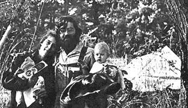

ORIGINALLY PUBLISHED IN THE EUGENE, OREGON AUGUR
Rivendale is a commune of 20 adults, five children, two dogs, too many cats and a pony living on four acres close to Eugene, Oregon.
Named for a mythical elf city in Tolkien's Middle Earth, the commune was started in August, 1968 by "Pip" Cole and John Butler. The primary goal of Rivendale is to provide a large family unit in which all members work for a common good. The secondary goal is a move toward self-sufficiency. Although some members have a strong desire to be relatively independent of the consumer society, others are less concerned with disaffiliation. Many members work in Eugene and the commune buys much of its supplies.
But most of the food is grown in the community's two gardens. The meals consist of vegetables, nuts, fruits, rice and homemade bread. Little meat is eaten, but a strictly vegetarian diet is not stressed.
In theory, everyone is expected to work according to his ability. But the commune has learned that some people naturally "pull more weight" than others.
This and other day-to-day problems that exist in society have to be coped with at the commune. Because it is a microcosm, the community feels these problems more acutely.
When a hassle develops, a general meeting is called. The gathering centers around what Tony Cole calls a "dialogue". This is a talk session in which the problem is brought into the open and discussed by all members. An attempt is then made to get general approval of a solution. This dialogue form of problem solving is one of the commune's many experiments in group living.
Another experiment was a marathon in which members stayed in one room for three days. Led by an advisor from Senoi Institute, the family tried to communicate through all the senses.
The commune is not accepting applicants at this time. Members feel there is neither actual nor emotional room for new people. They are planning to move to a more rural area and, as an incorporated non-profit organization, they hope to purchase some land.
Due to exploitation by news media, Rivendale is leary of exposure and publicity. But its members also try to avoid an atmosphere of mystique. Recently, they held an open house, inviting neighbors to come and ask questions about the commune.
Many members feel that Rivendale has developed a personality but the individuals who live there are a mixture of opposites. Some are actively involved in politics, others are apolitical, a few are into personal hangups and still others are concerned with society's problems. Their one common ground is Rivendale.
|
 DAVE JOHNSON AND ARAGORN |
|
|